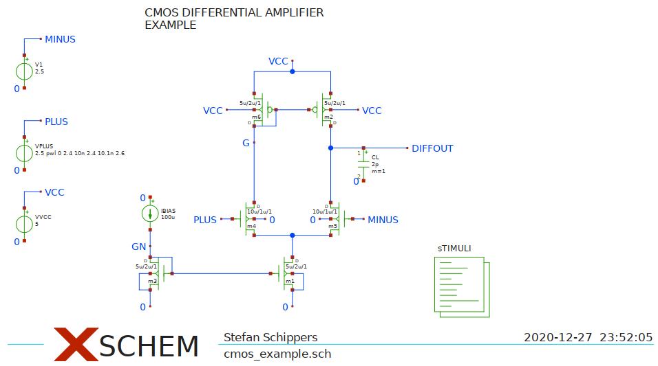
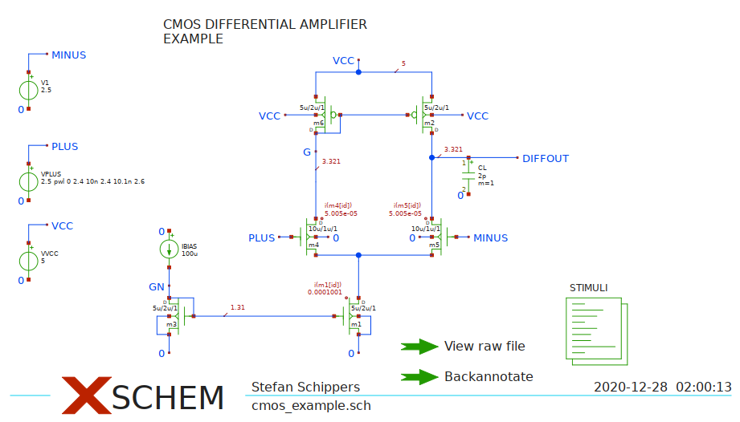
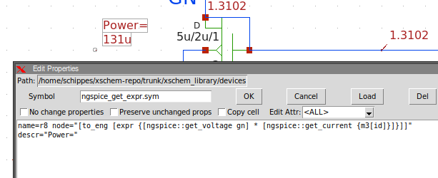

TUTORIAL: Backannotation of NGSPICE simulation operating
point data into an XSCHEM schematic
The objective of this tutorial is to show into the schematic the operating point data (voltages currents, other electrical parameters) of a SPICE simulation done with the Ngspice simulator. This tutorial is based on the cmos_example.sch example schematic located in the examples/ directory. Start Xschem from a terminal since we need to give some commands in this tutorial.
SETUP
Select the 'STIMULI' code block (click on it) and edit its attributes (press q or Shift-q):
.temp 30
** models are generally not free: you must download
** SPICE models for active devices and put them into the below
** referenced file in netlist/simulation directory.
.include "models_cmos_example.txt"
.control
op
save all
write cmos_example.raw
.endc
The important parts are in red in above text. This ensures all variables are saved into the raw file.
These instructions are for an interactive ngspice run.
You may have other simulations saved in the raw file (dc, tran, ac) however one operating point
must also be present:
.temp 30
** models are generally not free: you must download
** SPICE models for active devices and put them into the below
** referenced file in netlist/simulation directory.
.include "models_cmos_example.txt"
.control
save all
dc vplus 2.3 2.7 0.001
write cmos_example.raw
set appendwrite
op
save all
write cmos_example.raw
.endc
When done open the Simulation-> Configure simulators and tools dialog box and ensure the
Ngspice simulator is selected (not Ngspice batch). Also ensure the spice netlist mode is
selected (Options -> Spice netlist).

SIMULATION
If you now press the Netlist followed by the Simulate button simulation should complete with no errors.

You can close the simulator since we need only the cmos_example.raw file that is now saved
in the simulation directory (usually ~/.xschem/simulations/cmos_example.raw).
Now verify that xschem is able to read the raw file: issue this command in the xschem console:
xschem annotate_op
xschem [~] xschem annotate_op Raw file data read: /home/schippes/.xschem/simulations/cmos_example.raw points=1, vars=38, datasets=1 0 xschem [~]
If there are no errors we are ready and set.
you can load also a specific file:
xschem [~] xschem annotate_op $netlist_dir/cmos_example_ngspice.raw
ANNOTATION
The annotation procedure is based on a pull method: the probe objects have atributes or tcl commands embedded that fetch simulation data from a table that has been read by Xschem. In addition to specific probe elements also net labels will show voltage values and ammeters / voltage sources will show currents.
To ensure all currents are saved modify the STIMULI attributes as follows:
.temp 30 ** models are generally not free: you must download ** SPICE models for active devices and put them into the below ** referenced file in netlist/simulation directory. .include "models_cmos_example.txt" .option savecurrents .save all .control op write cmos_example.raw .endc
Remove all previous probe elements and place some devices/ngspice_probe.sym components and some devices/ngspice_get_value.sym components. the ngspice_probe.sym is a simple voltage viewer and must be attached to a net. The ngspice_get_value.sym displays a generic variable stored in the raw file. This symbol is usually placed next to the referenced component, but does not need to be attached to any specific point or wire. Edit its attributes and set its node attribute to an existing saved variable in the raw file.
ngspice_get_value.sym debugging tips:
- See all available devices in ngspice with display
- See all values for a device with print @somedevice
- eg print @m.xm6.xmain1.msky130_fd_pr__nfet_g5v0d16v0__base[vth]
- Some values must explicitly be saved before the analysis to be available for annotation.
- eg save @m.xm6.xmain1.msky130_fd_pr__nfet_g5v0d16v0__base[vth]
- Usually you'll need to wrap your value with v() in the symbol properties in xschem.
- eg node=v(@m.xm6.xmain1.msky130_fd_pr__nfet_g5v0d16v0__base[vth])

Run again the simulation and the xschem annotate_op command and values will be updated.

You can add additional variables in the raw file , for example modifying the .save instruction:
.save all @m4[gm] @m5[gm] @m1[gm]

Data annotated into the schematic using these components allows more simulation parameters to be viewed into the schematic, not being restricted to currents and voltages. Since these components get data using a pull method data is not persistent and not saved to file. After reloading the file just do a xschem annotate_op to view data again.
There is one last probe component, the devices/ngspice_get_expr.sym. This is the most complex one, and thus also the most flexible. It allows to insert a generic tcl expression using spice simulated data to report more complex data. In the example below this component is used to display the electrical power of transistor m3, calculated as V(GN) * Id(m3).

you can wrap the whole expression inside a [to_eng ... ] to have the value displayed in engineering form using the usual SPICE suffixes (example: 131u for 131e-6)
The example shown below uses this component to display a (meaningless, but shows the usage) gm ratio of 2 transistors:

The syntax is a bit complex, considering the verbosity of TCL and the strange ngspice naming syntax, however once a working one is created changing the expression is easy.
To avoid the need of typing commands in the xschem console a launcher component devices/launcher.sym can be placed with the tcl command for doing the annotation. Just do a Ctrl-Click on it to trigger the annotation.